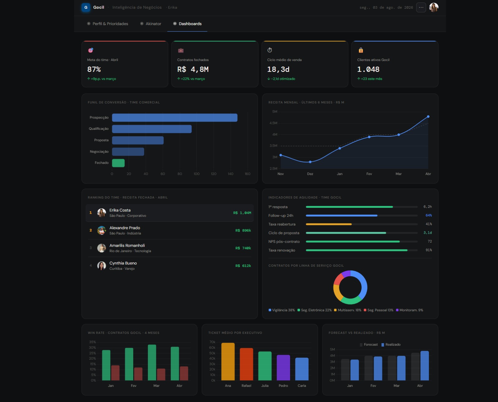
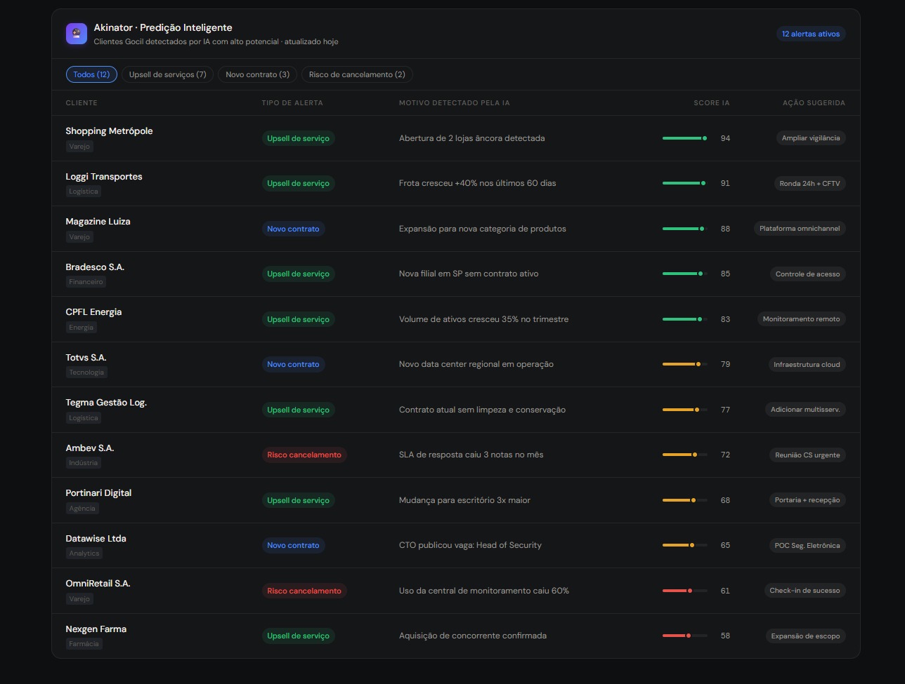
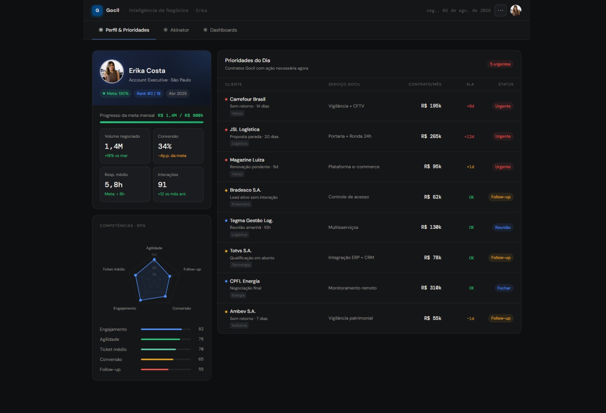

Transformo dados, processos e tecnologia em operações mais eficientes.
Estruturo soluções de RevOps, Dados, Automação e Inteligência Artificial para empresas que querem reduzir tarefas manuais, organizar informações e tomar decisões melhores.
O que eu resolvo
Tecnologia só faz sentido quando resolve um problema.
Identifico gargalos, estruturo os dados e desenvolvo soluções que tornam operações mais eficientes e decisões mais inteligentes.
Processos Manuais
Automatize tarefas repetitivas e reduza trabalho operacional.
Dados Desorganizados
Transforme múltiplas fontes de dados em uma estrutura confiável.
Falta de Visibilidade
Tenha indicadores e dashboards para acompanhar a operação.
Decisões Complexas
Use automação e IA para apoiar análises e decisões.
Serviços
Soluções estruturadas para transformar a dinâmica operacional de times analíticos e comerciais.
RevOps & Inteligência Comercial
Estruturação de processos comerciais, CRM e indicadores para tornar a operação mais organizada e previsível.
Dados & Analytics
Transformo dados espalhados em informações confiáveis para acompanhamento e tomada de decisão.
Automação & Desenvolvimento
Desenvolvo ferramentas e automações sob medida para eliminar tarefas repetitivas e melhorar processos internos.
Inteligência Artificial
Aplicação prática de IA para automatizar tarefas, analisar informações e apoiar decisões.
Não encontrou exatamente o que procura?
Posso estruturar uma solução sob medida para o seu problema.
Projetos
Casos de engenharia de dados, visualização analítica e inteligência aplicada.

Sistemas de Inteligência de Negócios
Arquitetura de dados para monitoramento de KPIs comerciais em tempo real.

Predição Inteligente com IA
Modelos preditivos para transformar dados históricos em insights para tomada de decisão.

Dashboards Operacionais
Interfaces de acompanhamento de metas e performance de times corporativos.
Como eu trabalho
Um fluxo claro e direto para estruturar soluções escaláveis sem complexidade desnecessária.
Diagnóstico
Entendo o problema, os objetivos e os gargalos da operação.
Arquitetura
Analiso dados, processos e ferramentas e desenho a solução.
Implementação
Desenvolvo, integro, automatizo e coloco a solução em operação.
Evolução
Acompanho a utilização e identifico oportunidades de melhoria.
Tecnologias
Tecnologias que utilizo para transformar complexidade em ferramentas funcionais.
Dados
Automação
Desenvolvimento
Inteligência Artificial
Sobre mim
Sou Dérik Deniel, profissional focado na interseção entre negócios, dados e tecnologia. Meu trabalho consiste em entender problemas operacionais, estruturar dados e desenvolver soluções que tornam processos mais eficientes e informações mais úteis para a tomada de decisão. Minha atuação combina RevOps, Business Intelligence, análise de dados, automação, desenvolvimento e Inteligência Artificial.
Vamos transformar um problema em uma solução?
Se você possui um processo manual, dados desorganizados ou uma operação que poderia ser mais eficiente, podemos conversar.